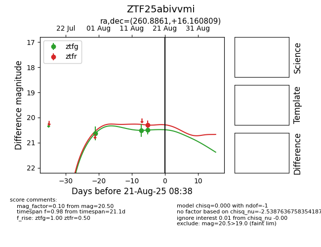

Target ZTF25abivvmi at 2025-08-21 08:38, see:
FINK: fink-portal.org/ZTF25abivvmi
Lasair: lasair-ztf.lsst.ac.uk/objects/ZTF25abivvmi
ALeRCE: alerce.online/object/ZTF25abivvmi
alt names
ZTF25abivvmi (ztf,alerce)
coordinates:
equatorial (ra, dec) = (260.8861,+16.16081)
galactic (l, b) = (38.3090,+26.53657)
photometry
last ztfg=20.50, ztfr=20.30
3 ztfg, 1 ztfr detections
